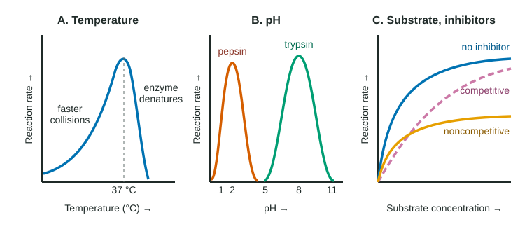

Environmental Impacts on Enzyme Function
An enzyme's rate depends on its surroundings.
Part 1 · Hook
Why this matters
A fever of 39 °C makes you feel awful, and a fever of 42 °C can kill. Pepsin digests meat in your acidic stomach and stops cold the moment it reaches your small intestine. Many poisons and drugs work by sticking to one enzyme. All of these come down to the same idea: an enzyme's rate depends on its surroundings, and on what else is binding to it.
Part 2 · Before you start
What this builds on
Part 3 · Prerequisite check
Quick check before you start
1. How does an enzyme speed up a reaction?
- It supplies energy to the substrate so more molecules can react
- It lowers the activation energy needed to reach the transition state
- It changes the products into lower-energy molecules
Show the answer
Enzymes lower the energy hill (activation energy). They add no energy and do not change the products.
- It supplies energy to the substrate so more molecules can react:
- Correct: It lowers the activation energy needed to reach the transition state:
- It changes the products into lower-energy molecules:
2. A protein is denatured. What has changed?
- Its three-dimensional shape, because weak interactions between side chains were disrupted
- Its sequence of amino acids, because some were removed from the chain
- Its number of peptide bonds, because water was added across them
Show the answer
Denaturation unfolds the protein by breaking hydrogen bonds, ionic attractions and other weak interactions. The amino acid sequence and peptide bonds stay the same.
- Correct: Its three-dimensional shape, because weak interactions between side chains were disrupted:
- Its sequence of amino acids, because some were removed from the chain:
- Its number of peptide bonds, because water was added across them:
3. Compared with a solution at pH 8, a solution at pH 2 has
- fewer hydrogen ions, because a lower number means fewer
- 6 times as many hydrogen ions
- 1,000,000 times as many hydrogen ions
Show the answer
Each pH unit is a tenfold change in hydrogen ion concentration, and lower pH means more hydrogen ions. Six units apart: 10⁶ = 1,000,000 times as many.
- fewer hydrogen ions, because a lower number means fewer:
- 6 times as many hydrogen ions:
- Correct: 1,000,000 times as many hydrogen ions:
Part 4 · See it
See it first

Part 5 · Step by step
How it works, step by step
- Raising the temperature makes enzyme and substrate molecules move faster.They meet more often and more of those collisions have enough energy to react, so the rate rises.
- Above the optimal temperature, the extra motion breaks the weak bonds that hold the enzyme's fold.The active site loses its shape (denaturation), so the rate falls steeply.
- A pH away from the optimum adds hydrogen ions to, or removes them from, side chains.Side-chain charges change, so attractions inside the protein and with the substrate change, and the rate falls; extreme pH denatures the enzyme.
- Adding substrate fills more of the active sites at any moment.The rate rises, then levels off at a maximum once nearly all active sites are busy (saturation). Now the amount of enzyme is the limiting factor.
- A competitive inhibitor looks like the substrate and occupies the active site.Fewer active sites hold substrate; adding much more substrate outcompetes the inhibitor, so the same maximum rate is eventually reached.
- A noncompetitive inhibitor binds an allosteric site and changes the enzyme's shape.Those enzyme molecules work poorly whatever the substrate level, so extra substrate cannot restore the rate and the maximum is lower.
Part 6 · Key ideas
Key ideas
- Each enzyme has an optimal temperature and optimal pH that match where it works: about 37 °C for most human enzymes, pH 2 for stomach pepsin, pH 8 for intestinal trypsin.
- Cold slows an enzyme without unfolding it: warm it up and the rate returns. Heat past the optimum unfolds it; mild damage may reverse (renaturation), severe damage usually does not.
- On a rate-against-substrate graph, the rising part is limited by substrate and the plateau by enzyme. To raise the plateau, add enzyme.
- Competitive: same maximum, reached at higher substrate. Noncompetitive: lower maximum. Irreversible inhibitors bind for good. Many enzymes also need a cofactor, such as a metal ion.
Part 7 · Misconception
A common mistake
The wrong idea: Adding more substrate overcomes any inhibitor, because the substrate eventually pushes the inhibitor out of the way.
What actually happens: Extra substrate outcompetes a competitive inhibitor, which fights for the active site. A noncompetitive inhibitor binds somewhere else and changes the enzyme's shape, so extra substrate cannot reverse it.
Part 8 · Check yourself
Check yourself
Exam-style questions. Anything you miss goes into your review queue.
Graph
Two inhibitors of one enzyme
Researchers measured the initial rate of an enzyme reaction at seven substrate concentrations, with no inhibitor, with 1 mM of inhibitor X, or with 1 mM of inhibitor Y. Temperature, pH and the amount of enzyme were the same in every trial.
No inhibitorInhibitor XInhibitor Y
Data table
| Substrate concentration (mM) | No inhibitor | Inhibitor X | Inhibitor Y |
|---|---|---|---|
| 0 | 0 | 0 | 0 |
| 1 | 16.7 | 7.1 | 8.3 |
| 2 | 25 | 12.5 | 12.5 |
| 4 | 33.3 | 20 | 16.7 |
| 8 | 40 | 28.6 | 20 |
| 16 | 44.4 | 36.4 | 22.2 |
| 32 | 47.1 | 42.1 | 23.5 |
1. Which statement best describes the data at the highest substrate concentration tested?
- With X the rate is close to the uninhibited rate, while with Y it is about half the uninhibited rate.
- Both inhibitors lower the rate to about half of the uninhibited rate at each substrate concentration.
- With Y the rate is close to the uninhibited rate, while with X it is about half the uninhibited rate.
- Neither inhibitor changes the rate at 32 mM, because the enzyme is saturated with substrate there.
Show the answer
At 32 mM: no inhibitor 47.1, X 42.1 (about 89%), Y 23.5 (about 50%).
- Correct: With X the rate is close to the uninhibited rate, while with Y it is about half the uninhibited rate.: X nearly catches up (42.1 against 47.1) while Y stays near half (23.5).
- Both inhibitors lower the rate to about half of the uninhibited rate at each substrate concentration.: At 32 mM, X is at about 89% of the uninhibited rate, not half.
- With Y the rate is close to the uninhibited rate, while with X it is about half the uninhibited rate.: This reverses the two inhibitors: Y is the one stuck near half.
- Neither inhibitor changes the rate at 32 mM, because the enzyme is saturated with substrate there.: Y still halves the rate at 32 mM, so the inhibitors do change it there.
2. Which identification of the inhibitors is best supported by the data?
- X is competitive, since extra substrate brings it toward the uninhibited maximum; Y is noncompetitive, since its maximum stays low.
- X is noncompetitive, since it lowers the rate the most at low substrate; Y is competitive, since its rate levels off at a lower value early.
- Both are competitive, since both of their curves level off as substrate rises, just as the curve of an uninhibited enzyme does.
- Both are noncompetitive, since at 2 mM substrate they give exactly the same rate, 12.5 µmol/min.
Show the answer
Extra substrate outcompetes a competitive inhibitor, so X's curve keeps climbing toward the uninhibited maximum. Y levels off near half: extra substrate cannot undo a shape change at an allosteric site.
- Correct: X is competitive, since extra substrate brings it toward the uninhibited maximum; Y is noncompetitive, since its maximum stays low.: The pattern at high substrate tells them apart: X catches up, Y's plateau stays low.
- X is noncompetitive, since it lowers the rate the most at low substrate; Y is competitive, since its rate levels off at a lower value early.: Lowering the rate most at low substrate is what a competitive inhibitor does, because there the inhibitor wins most of the competition.
- Both are competitive, since both of their curves level off as substrate rises, just as the curve of an uninhibited enzyme does.: Every curve levels off eventually; what matters is the height of the plateau, and Y's is about half.
- Both are noncompetitive, since at 2 mM substrate they give exactly the same rate, 12.5 µmol/min.: Equal rates at one concentration do not identify the type; the curves separate sharply at high substrate.
3. The experiment is repeated at 100 mM substrate. Which prediction is most consistent with the data?
- The rate with X will be very close to the uninhibited rate, while the rate with Y will stay near 25 µmol/min.
- The rates with X and with Y will both rise to the uninhibited rate, because substrate now far outnumbers each inhibitor.
- The rate with Y will rise above the uninhibited rate, because Y slows the reaction less as the substrate builds up.
- The rates with X and with Y will both fall, because so much substrate denatures the enzyme in each of the trials.
Show the answer
X's curve is still climbing toward the uninhibited maximum of about 50 µmol/min; Y's has nearly leveled off near 25 µmol/min, half the maximum.
- Correct: The rate with X will be very close to the uninhibited rate, while the rate with Y will stay near 25 µmol/min.: Following each curve's trend: X keeps closing the gap, Y stays at its lower plateau.
- The rates with X and with Y will both rise to the uninhibited rate, because substrate now far outnumbers each inhibitor.: Substrate can outcompete only an inhibitor that competes for the active site; Y's plateau has already flattened.
- The rate with Y will rise above the uninhibited rate, because Y slows the reaction less as the substrate builds up.: An inhibitor lowers the rate; nothing in the data suggests Y could make the enzyme faster than no inhibitor.
- The rates with X and with Y will both fall, because so much substrate denatures the enzyme in each of the trials.: Substrate does not denature enzymes; the uninhibited curve keeps rising toward its maximum.
4. Which explanation best accounts for the shape of the curve with inhibitor Y?
- Y binds away from the active site and alters the enzyme's shape, so enzymes it binds work poorly at any substrate level.
- Y fits the active site so tightly that substrate molecules can push it back out just at very high substrate concentrations.
- Y breaks down the substrate before it reaches the enzyme, so less substrate is left to react at each of the concentrations tested.
- Y raises the activation energy of the reaction above its uncatalyzed value, so the enzyme makes product more slowly.
Show the answer
An inhibitor at an allosteric site changes the active site's shape. Substrate cannot compete with something that is not in the active site, so the maximum rate stays lower.
- Correct: Y binds away from the active site and alters the enzyme's shape, so enzymes it binds work poorly at any substrate level.: A noncompetitive inhibitor removes working enzyme without competing, so the plateau drops.
- Y fits the active site so tightly that substrate molecules can push it back out just at very high substrate concentrations.: An inhibitor that substrate eventually pushes out is competitive; that describes X, whose curve catches up.
- Y breaks down the substrate before it reaches the enzyme, so less substrate is left to react at each of the concentrations tested.: Nothing in the setup suggests Y reacts with the substrate; the pattern matches binding to the enzyme.
- Y raises the activation energy of the reaction above its uncatalyzed value, so the enzyme makes product more slowly.: An inhibited enzyme still lowers the barrier for the substrate it does handle; Y reduces how many enzymes work well.
5. An enzyme reaction is running with a very large excess of substrate, and the rate has leveled off. Which change would most increase the rate?
- Adding more enzyme
- Adding more substrate
- Adding a competitive inhibitor
- Lowering the temperature by 10 °C
Show the answer
On the plateau, nearly every active site is busy, so the amount of enzyme is the limiting factor. More enzyme means more active sites and a higher rate.
- Correct: Adding more enzyme: Enzyme is the limiting factor on the plateau; adding it adds active sites.
- Adding more substrate: The active sites are already saturated, so extra substrate has little effect.
- Adding a competitive inhibitor: An inhibitor lowers the rate.
- Lowering the temperature by 10 °C: Cooling slows collisions and lowers the rate.
6. A human enzyme reaction runs at 37 °C and pH 7 with substrate in large excess, so the rate is at its maximum. Predict the change in the rate after each separate change.
| Variable | Change |
|---|---|
| Doubling the substrate concentration | — |
| Doubling the enzyme concentration | — |
| Adding a noncompetitive inhibitor | — |
| Cooling the reaction to 27 °C | — |
Show the answer
At saturation the enzyme amount limits the rate: more enzyme raises it, extra substrate does not, and inhibitors or cooling lower it.
- Doubling the substrate concentration: no change. The active sites are already saturated, so extra substrate has nowhere to bind and the rate stays at the maximum.
- Doubling the enzyme concentration: increases. Enzyme is the limiting factor on the plateau; twice the active sites gives about twice the rate.
- Adding a noncompetitive inhibitor: decreases. It binds an allosteric site and changes the enzyme's shape, removing working enzyme; substrate cannot reverse it.
- Cooling the reaction to 27 °C: decreases. Molecules move more slowly, so fewer collisions have enough energy to react.
7. Product made by an enzyme was measured at two temperatures: at 37 °C, 10, 20, 48 and 90 µmol after 1, 2, 5 and 10 minutes; at 55 °C, 18, 30, 40 and 41 µmol at the same times. Which interpretation best fits the data?
- At 55 °C the enzyme starts faster but denatures within minutes, so it makes less product over 10 minutes.
- At 55 °C the enzyme runs out of substrate first, because it starts faster and uses the substrate up sooner.
- At 37 °C the enzyme is slowly denaturing, which is why its product keeps rising over the 10 minutes.
- At 55 °C the enzyme stays active the whole time, but the product breaks down as fast as it forms after 5 minutes.
Show the answer
In the first minute 55 °C wins (18 against 10 µmol), but by 5-10 minutes it adds almost nothing (40 to 41) while 37 °C keeps going. The hot enzyme is losing its shape over time.
- Correct: At 55 °C the enzyme starts faster but denatures within minutes, so it makes less product over 10 minutes.: A fast start then a stall at a lower total points to the enzyme failing, not the substrate.
- At 55 °C the enzyme runs out of substrate first, because it starts faster and uses the substrate up sooner.: Both tubes started with the same substrate, and the 37 °C tube made 90 µmol, so substrate was still available when the 55 °C tube stalled near 41.
- At 37 °C the enzyme is slowly denaturing, which is why its product keeps rising over the 10 minutes.: Steady production at 37 °C shows a working enzyme; denaturing would slow it down.
- At 55 °C the enzyme stays active the whole time, but the product breaks down as fast as it forms after 5 minutes.: Nothing in the data shows product breaking down; an enzyme losing its shape explains the stall more simply.
Part 9 · Summary
Summary
An enzyme's rate depends on its surroundings. Warming speeds collisions until heat denatures the enzyme past its optimal temperature; pH away from the optimum changes side-chain charges and, at extremes, denatures it. More substrate raises the rate until the active sites are saturated, after which the enzyme amount limits the rate. Inhibitors lower the rate: competitive ones occupy the active site and can be outcompeted by substrate, noncompetitive ones bind an allosteric site and lower the maximum, and irreversible ones bind for good. Many enzymes need a cofactor to work.
Part 10 · Up next
What comes next
Part 11 · Connections